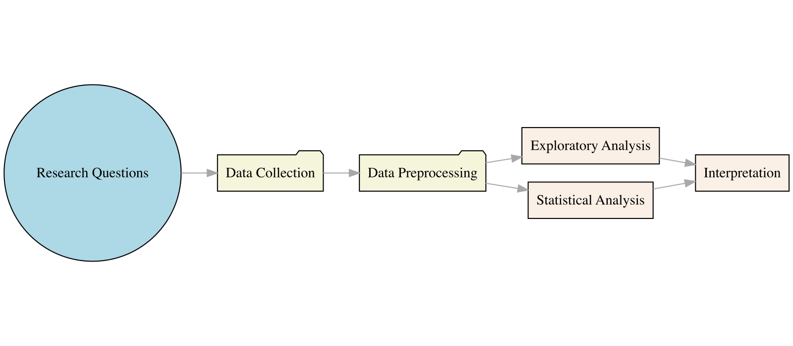
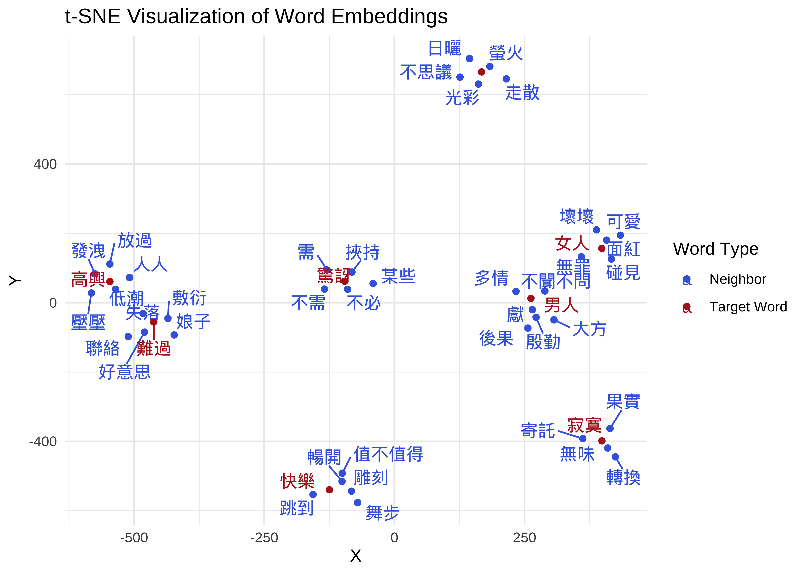
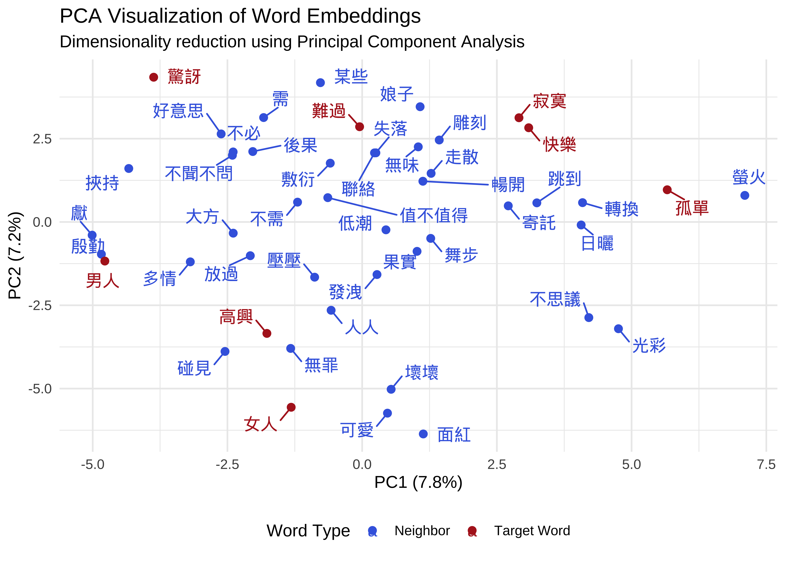
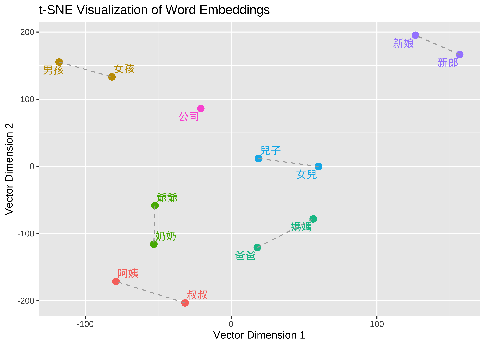
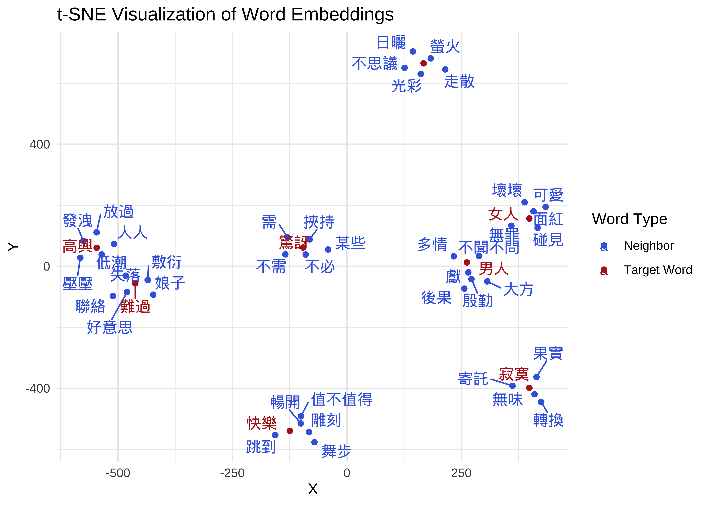
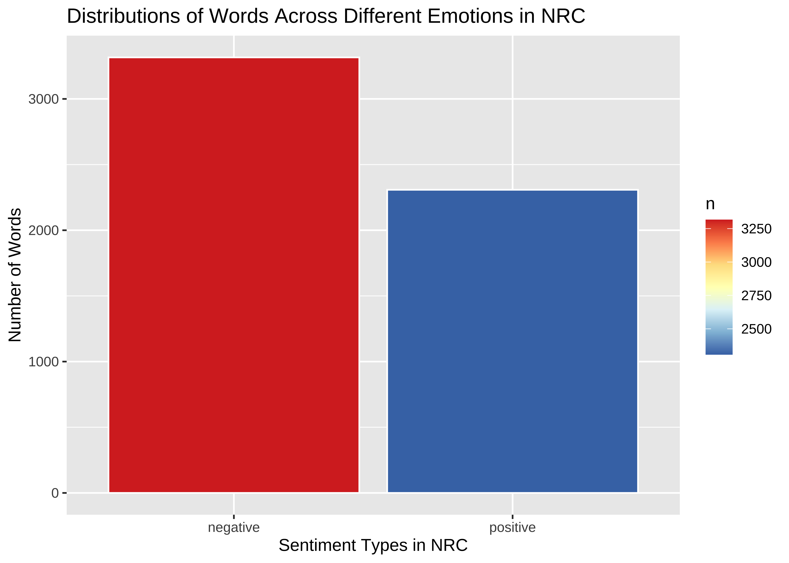
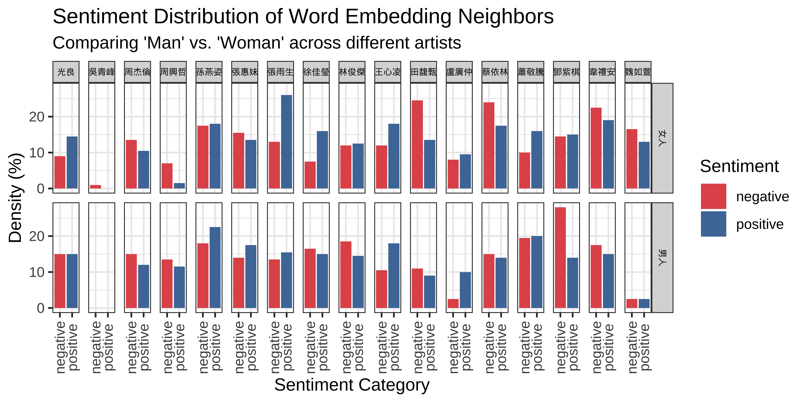
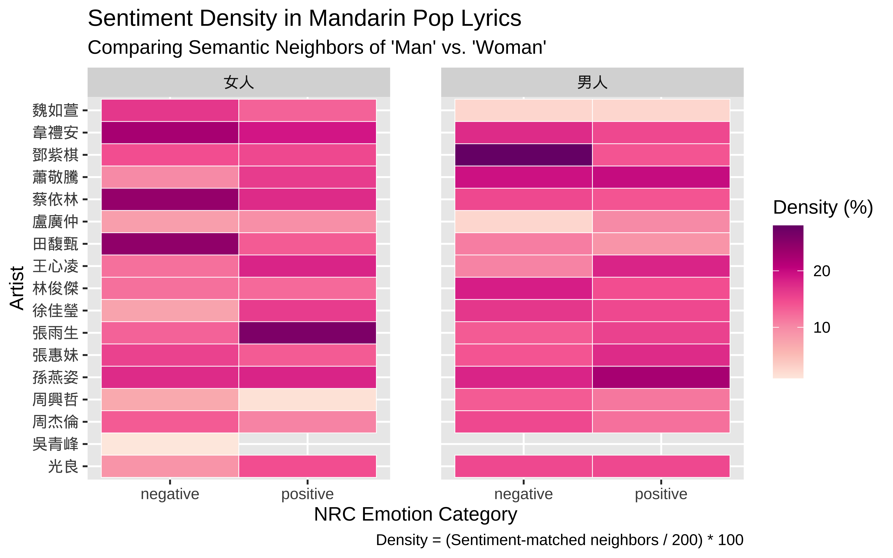
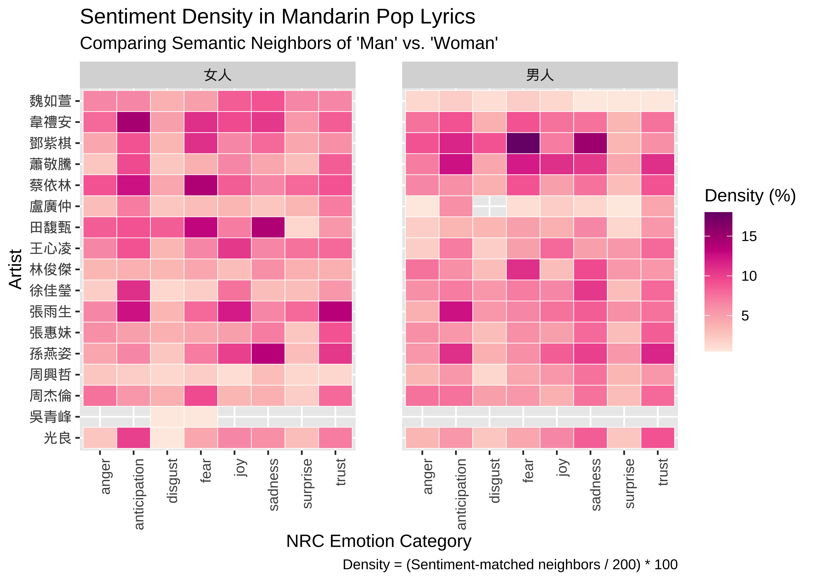

Chapter 13 Semantic Representations: Word Embeddings
13.1 A Typical Data Analysis Workflow
Warning: package 'magrittr' was built under R version 4.5.2
Our Research Questions
In Mandarin pop songs, what are the general emotional attitudes toward the concepts of “Man” and “Woman”? Are there differences?
Do these emotional connections vary among different artists?
Through this simple example, we will guide you through the typical steps, workflow, and details required for a data science research project.
13.2 Data Collection
- The first step in data science is data collection capability.
- Use existing corpora or collect your own.
- Web scraping is usually the first step for beginners.
- We scraped Mandarin pop lyrics and related information (artist, title, lyricist, composer, etc.) from the MOJIM lyrics website.
13.3 Data Preprocessing
Common Text Processing
Typical text data preprocessing includes:
Text Normalization
Text Tokenization
Text Enrichment/Annotation
Data often contains noise; the first step is usually Data Wrangling—removing characters unrelated to the research topic to facilitate subsequent analysis.
- In this example, we removed the following characters from the original lyrics:
- Extra whitespace and line breaks
- Punctuation and special symbols
- English characters and Arabic numerals
## --- PURPOSE: A custom cleaning pipeline to remove noise from raw Chinese lyrics ---
preprocess <- function(doc) {
## 1. Normalizing Line Breaks:
## Collapses multiple consecutive newlines into a single one to maintain structure
doc <- str_replace_all(doc, "\n+", "\n")
## 2. Filtering Non-Linguistic Noise:
## Uses Unicode properties to remove:
## \p{P} - Punctuation (e.g., ！, ？, 。)
## \p{S} - Symbols (e.g., ￥, ★, ❤)
## \p{N} - Numbers (e.g., 1, 2, 3)
## These are replaced with spaces to prevent accidental merging of words
doc <- str_replace_all(doc, "[\\p{P}\\p{S}\\p{N}]", " ")
## 3. Filtering Latin Characters (English):
## Specifically removes lowercase (\p{Ll}) and uppercase (\p{Lu}) letters
## Useful when you want to focus exclusively on Mandarin Chinese analysis
doc <- str_replace_all(doc, "[\\p{Ll}\\p{Lu}]", " ")
## 4. Normalizing White Space:
## Removes both standard spaces and the Chinese full-width space (\u3000)
doc <- str_replace_all(doc, "[ \u3000]+", "")
## 5. Final Formatting & Trimming:
## Re-collapses newlines after the cleaning steps above
doc <- str_replace_all(doc, "\n+", "\n")
## Splits document into lines, trims whitespace from ends, and joins back together
lines <- str_split(doc, "\n")[[1]]
doc <- paste(str_trim(lines), collapse = "\n")
return(doc)
}
## --- APPLICATION ---
## Uses purrr::map_chr to apply the 'preprocess' function to every entry in the
## lyric column, returning a clean character vector
lyric <- map_chr(song_sub$lyric, preprocess)[1] "你說的話 在我心中生了根\n愛得很深 所以心會疼\n記憶 在我的心中翻滾\n是不是每一個人 都像我一樣笨\n只怕再問 對彼此都太殘忍\n我能感覺 另外一個人\n我等 等笑容換成淚痕\n愛在崩潰的時候 比較真\n太多疑問 知道答案又如何\n原來容忍不需要天份 只要愛錯一個人\n心痛比快樂更真實 愛為何這樣的諷刺\n我忘了這是第幾次 一見你就無法堅持\n孤獨比擁抱更真實 愛讓人失去了理智\n會不會是我太自私 拒絕更寂寞的日子\n放不開 也看不見未來\n難道這種不完美 才是愛情真實的樣子\n太多疑問 知道答案又如何\n原來容忍不需要天份 只要愛錯一個人\n心痛比快樂更真實 愛為何這樣的諷刺\n我忘了這是第幾次 一見你就無法堅持\n孤獨比擁抱更真實 愛讓人失去了理智\n會不會是我太自私 拒絕更寂寞的日子\n孤獨比擁抱更真實 愛讓人失去了理智\n會不會是我太自私 拒絕更寂寞的日子\n放不開 也看不見未來\n難道這種不完美 才是愛情真實的樣子\n感謝\ntang891228\n修正歌詞"[1] "你說的話在我心中生了根\n愛得很深所以心會疼\n記憶在我的心中翻滾\n是不是每一個人都像我一樣笨\n只怕再問對彼此都太殘忍\n我能感覺另外一個人\n我等等笑容換成淚痕\n愛在崩潰的時候比較真\n太多疑問知道答案又如何\n原來容忍不需要天份只要愛錯一個人\n心痛比快樂更真實愛為何這樣的諷刺\n我忘了這是第幾次一見你就無法堅持\n孤獨比擁抱更真實愛讓人失去了理智\n會不會是我太自私拒絕更寂寞的日子\n放不開也看不見未來\n難道這種不完美才是愛情真實的樣子\n太多疑問知道答案又如何\n原來容忍不需要天份只要愛錯一個人\n心痛比快樂更真實愛為何這樣的諷刺\n我忘了這是第幾次一見你就無法堅持\n孤獨比擁抱更真實愛讓人失去了理智\n會不會是我太自私拒絕更寂寞的日子\n孤獨比擁抱更真實愛讓人失去了理智\n會不會是我太自私拒絕更寂寞的日子\n放不開也看不見未來\n難道這種不完美才是愛情真實的樣子\n感謝\n修正歌詞"Word Segmentation (Chinese Preprocessing)
Since Chinese text does not have explicit word boundaries, the next step after initial cleaning is usually “Word Segmentation.”
In the word-segmented version of the lyrics, we use spaces as delimiters between words.
In this implementation, we used
jiebaRfor word segmentation. For more detail, please check the course material, Chinese Text Processing.
[1] "你說的話在我心中生了根\n愛得很深所以心會疼\n記憶在我的心中翻滾\n是不是每一個人都像我一樣笨\n只怕再問對彼此都太殘忍\n我能感覺另外一個人\n我等等笑容換成淚痕\n愛在崩潰的時候比較真\n太多疑問知道答案又如何\n原來容忍不需要天份只要愛錯一個人\n心痛比快樂更真實愛為何這樣的諷刺\n我忘了這是第幾次一見你就無法堅持\n孤獨比擁抱更真實愛讓人失去了理智\n會不會是我太自私拒絕更寂寞的日子\n放不開也看不見未來\n難道這種不完美才是愛情真實的樣子\n太多疑問知道答案又如何\n原來容忍不需要天份只要愛錯一個人\n心痛比快樂更真實愛為何這樣的諷刺\n我忘了這是第幾次一見你就無法堅持\n孤獨比擁抱更真實愛讓人失去了理智\n會不會是我太自私拒絕更寂寞的日子\n孤獨比擁抱更真實愛讓人失去了理智\n會不會是我太自私拒絕更寂寞的日子\n放不開也看不見未來\n難道這種不完美才是愛情真實的樣子\n感謝\n修正歌詞"[1] "你 說 的 話 在 我 心 中 生 了 根 \n 愛 得 很 深 所以 心 會 疼 \n 記憶 在 我 的 心 中 翻滾 \n 是 不 是 每 一 個 人 都 像 我 一樣 笨 \n 只 怕 再 問 對 彼此 都 太 殘忍 \n 我 能 感覺 另外 一 個 人 \n 我 等等 笑容 換成 淚痕 \n 愛 在 崩潰 的 時候 比較 真 \n 太多 疑問 知道 答案 又 如何 \n 原來 容忍 不 需要 天份 只要 愛錯 一 個 人 \n 心痛 比 快樂 更 真實 愛 為何 這樣 的 諷刺 \n 我 忘 了 這 是 第幾 次 一 見 你 就 無法 堅持 \n 孤獨 比 擁抱 更 真實 愛 讓 人 失去 了 理智 \n 會不會 是 我 太 自私 拒絕 更 寂寞 的 日子 \n 放 不 開 也 看 不 見 未來 \n 難道 這 種 不 完美 才 是 愛情 真實 的 樣子 \n 太多 疑問 知道 答案 又 如何 \n 原來 容忍 不 需要 天份 只要 愛錯 一 個 人 \n 心痛 比 快樂 更 真實 愛 為何 這樣 的 諷刺 \n 我 忘 了 這 是 第幾 次 一 見 你 就 無法 堅持 \n 孤獨 比 擁抱 更 真實 愛 讓 人 失去 了 理智 \n 會不會 是 我 太 自私 拒絕 更 寂寞 的 日子 \n 孤獨 比 擁抱 更 真實 愛 讓 人 失去 了 理智 \n 會不會 是 我 太 自私 拒絕 更 寂寞 的 日子 \n 放 不 開 也 看 不 見 未來 \n 難道 這 種 不 完美 才 是 愛情 真實 的 樣子 \n 感謝 \n 修正 歌詞"13.4 How do we define the sentiment of “Man” and “Woman” concepts?
To determine which concepts are associated with 男人 (Man) and 女人 (Woman), we compare two linguistic methodologies:
The Classic Approach: Collocations
Collocations identify words that habitually appear together more frequently than chance. This method focuses on the “company words keep” within a specific text.
- Mechanism: Uses statistical measures to find words that physically appear near the target within a fixed window.
- Intuition: It captures explicit, surface-level associations, such as specific adjectives an artist frequently uses to describe a gender.
- Analysis: We extract these highly linked words and analyze their emotional orientation using sentiment lexicons to see if certain genders are consistently paired with specific moods.
The Deep Learning Approach: Word Embeddings
Word Embeddings map words into a high-dimensional vector space where closeness equals semantic similarity, even if the words never appear in the same sentence.
- Mechanism: Learns latent relationships based on the Distributional Hypothesis, which states that words in similar contexts have similar meanings.
- Intuition: It captures conceptual neighbors and semantic islands, revealing deeper, implicit associations that simple frequency counts might miss.
- Analysis: By calculating the distance between gender vectors and emotion clusters, we can mathematically determine the semantic leaning of an artist’s portrayal of men and women.
13.5 Deep Learning “Word Embeddings”
- “Word Embeddings” is a very hot concept in Large Language Models (LLMs), Deep Learning, and AI in recent years!
- Word embeddings are a way to represent words with numbers, allowing computers to understand and process language.
- Word embeddings can be learned automatically through the distribution of vocabulary in text using deep learning.
- The underlying machine learning assumption is: “The more similar the context of two words, the closer their semantic distance.”
13.5.1 What are the benefits of Word Embeddings?
- It transforms words into numerical vector forms so computers can use them for various calculations.
- Semantic similarity can be quantified! This means words close in meaning will have similar numerical values in the vector space.
- In short, through Large Corpora] and deep learning, word embeddings allow us to see the semantic proximity between words.
- For example, we can build a word embedding model based on the small Pop Song Corpus.
a. Prepare the Tokens
The word2vec package requires the corpus data to be in a list of token-based character vectors, where words have been tokenized into independent units.
## 1. Convert Segmented Text to Tokens:
## Splits the space-separated character strings into individual word units (tokens)
song_sub_tokens <- str_split(song_sub$lyric_wordseg, "\\s+")
## 2. Stopword Preparation:
library(tmcn)
## Retrieve a standard Chinese stopword list and ensure it is in Traditional Chinese
## to match the script used in Mandarin Pop lyrics
stopwords_zh <- toTrad(stopwords("zh", source = "misc"))
## 3. Custom Filtering:
## Add domain-specific noise words commonly found in lyric metadata
stopwords_zh <- c(stopwords_zh, "感謝", "修正", "提供", "歌詞")
## 4. Token Cleaning Pipeline:
song_sub_tokens %>%
## Convert the raw list into a quanteda 'tokens' object for efficient processing
as.tokens() %>%
## Remove all functional words and custom noise defined in our stopword list
tokens_remove(stopwords_zh) %>%
## Convert the cleaned tokens back into a standard R list for downstream analysis
as.list() -> song_sub_tokens- To train word embeddings in R using a
quantedatokens object, the most common and efficient approach is using theword2vecpackage. Whilequantedahandles the text processing,word2vecprovides the machine learning implementation to learn the vector representations.
b. Training the Model
The word2vec function allows you to specify the type of architecture (Skip-gram or CBOW) and other hyperparameters.
## Set a seed to ensure that the stochastic (random) weight initialization
## remains the same every time the code is executed
set.seed(123)
## Model Training Configuration:
model <- word2vec(
x = song_sub_tokens, ## Input: A list of character vectors (cleaned tokens)
## Architecture: Skip-gram focuses on using a target word to predict context,
## which typically handles rare words and semantic nuances better than CBOW
type = "skip-gram",
## Vector Dimensionality: Maps each word into a 128-dimensional coordinate space
dim = 128,
## Context Window: The model looks at 5 words before and 5 words after the target
window = 5,
## Training Iterations: The algorithm makes 20 complete passes over the dataset
iter = 20,
## Frequency Threshold: Words appearing fewer than 5 times in the corpus are
## excluded to ensure the model only learns from sufficient evidence
min_count = 5,
## Parallel Processing: Distributes the computation across 4 CPU cores to reduce training time
threads = 4
)
## Export the trained model to a binary file so it can be reloaded
## later without re-running the training process
write.word2vec(model, "embeddings/songs_tokens_embeddings.bin")Within the Word2Vec framework, there are two primary architectures used to learn word embeddings. Both rely on a “sliding window” approach to analyze context, but they differ in their prediction direction.
CBOW (Continuous Bag-of-Words)
- Predicting the target from the context
- Logic: The model takes multiple surrounding “context words” as input and tries to predict the single “target word” in the middle.
- Performance:
- Faster to train than Skip-gram.
- Works well with frequent words.
- Smoothes out distributional information by treating the context as a single “bag” of words.
Skip-gram
- Predicting the context from the target
- Logic: The model takes a single “target word” as input and tries to predict the multiple “context words” that are likely to appear around it.
- Performance:
- Slower to train because it performs more independent predictions.
- Superior at capturing the semantics of rare words and complex relationships.
- Generally preferred for high-quality, large-scale linguistic research.
c. Extracting and Using Embeddings
Once the model is trained, you can convert the word embeddings into a matrix for analysis or perform nearest-neighbor searches.
- Convert to Matrix
This is useful if you want to use the vectors for downstream tasks like clustering or visualization.
## Extract the model into a numeric matrix (Rows = Words, Cols = Dimensions)
embedding_matrix <- as.matrix(model)
## Check dimensions: Returns (Vocabulary Size) x (Vector Size)
dim(embedding_matrix)[1] 6715 128 [,1] [,2] [,3] [,4] [,5] [,6]
啦啦啦啦啦啦 -0.5565755 0.5403181 -0.1907424 2.2037737 -0.5880290 0.8335724
不行 2.0012131 0.8623514 1.0751743 0.8538892 0.2703077 -1.6228430
灌醉 -0.3714184 0.2764275 -0.8629256 0.1533670 -0.4302930 -0.8786584
遭 -1.0538697 -0.1597221 1.0251306 0.9514959 -0.1472969 -0.4060965
孩子氣 -0.9931604 2.5363295 0.4723191 0.7263509 -0.4221019 1.7803526
[,7] [,8] [,9] [,10]
啦啦啦啦啦啦 -1.1787330 -0.9467657 1.0399548 1.16576743
不行 -0.3668516 -1.6583116 1.1864265 -0.66687912
灌醉 1.3465923 -1.2710948 1.8166435 -0.01753941
遭 0.2323204 -1.3714545 0.0287346 0.71901548
孩子氣 0.2000266 0.8425407 1.5854251 0.70922559d. Finding Semantic Neighbors
To find words that are semantically close to a target word (the most common use case in linguistics):
## Identify the 10 words with the highest cosine similarity to "愛" (Love)
neighbors <- predict(model, newdata = "愛", type = "nearest", top_n = 10)
## Output the result list showing neighbor terms and their similarity scores
print(neighbors)$愛
term1 term2 similarity rank
1 愛 簡簡單單 0.7016374 1
2 愛 我 0.6994971 2
3 愛 判處 0.6983948 3
4 愛 明白 0.6833066 4
5 愛 你 0.6789176 5
6 愛 不明不白 0.6756501 6
7 愛 真愛 0.6751033 7
8 愛 甩甩 0.6744492 8
9 愛 說 0.6733435 9
10 愛 麥克 0.6722113 10e. Saving and Loading the Model
Since training on large corpora can be time-consuming, you should save your model to a binary file.
f. Visualization
Principal Component Analysis (PCA) acts as a global linear lens that rotates and projects high-dimensional data to capture the directions of greatest variation. Because it is a deterministic mathematical transformation, it produces the same result every time and excels at preserving the broad, overall structure of the dataset. It is particularly useful for identifying clear semantic directions, such as parallel vectors in gender or tense analogies, where the goal is to maintain the relative distances across the entire “map” of word embeddings.
In contrast, t-Distributed Stochastic Neighbor Embedding (t-SNE) is a non-linear, probabilistic algorithm designed to prioritize local neighborhoods. It calculates the likelihood that points are neighbors in high-dimensional space and attempts to replicate those specific relationships in a 2D layout. While it is stochastic and yields slightly different results depending on the random seed, it is the superior choice for revealing complex, hidden clusters. This method is ideal for visualizing how words naturally group into semantic islands that linear methods like PCA might otherwise obscure.
Tsne Demo
## Define a set of focal words for the visualization
target_words <- c('寂寞', '快樂', '難過', '孤單', '高興', '驚訝', '男人', '女人')
## Define a safe extraction function to retrieve neighbors while handling missing vocabulary
get_neighbors <- function(model, target_word, n = 10) {
## Convert the model to a matrix for vocabulary checking and vector extraction
wvs <- as.matrix(model)
## Verify if the target word exists in the model to avoid execution errors
if (!(target_word %in% rownames(wvs))) {
warning(paste("Word '", target_word, "' not in vocabulary."))
return(character(0))
}
## Extract the specific embedding vector for the target word
target_vector <- wvs[target_word, , drop = FALSE]
## Identify the nearest neighbors based on the extracted vector
res <- predict(model, newdata = target_vector, type = "nearest", top_n = n)
## Return the character vector of neighboring terms
return(res[[target_word]]$term)
}
## Build a comprehensive list of words including targets and their top 5 neighbors
all_similar_words <- target_words %>%
map(~get_neighbors(model, .x, n = 5)) %>%
unlist() %>%
union(target_words) %>%
unique()
## Filter the full embedding matrix to keep only the selected subset of words
wvs <- as.matrix(model)
wvs_subset <- wvs[rownames(wvs) %in% all_similar_words, ]
## Execute t-SNE to compress the 128D vectors into 2D coordinates for plotting
## Perplexity is set low due to the small size of the word subset
set.seed(0)
tsne_out <- Rtsne(wvs_subset, perplexity = 2, max_iter = 10000, check_duplicates = FALSE)
## Prepare a data frame for ggplot2, mapping t-SNE coordinates to X and Y axes
tsne_df <- data.frame(
X = tsne_out$Y[, 1],
Y = tsne_out$Y[, 2],
label = rownames(wvs_subset),
## Logical flag to distinguish between original targets and their neighbors
is_target = rownames(wvs_subset) %in% target_words
)
## Render the 2D map using colors to highlight target concepts versus neighbors
ggplot(tsne_df, aes(X, Y, label = label)) +
geom_point(aes(color = is_target)) +
## Use repel to automatically position labels and prevent overlapping text
geom_text_repel(aes(color = is_target)) +
scale_color_manual(values = c("royalblue", "firebrick"),
labels = c("Neighbor", "Target Word"),
name = "Word Type") +
theme_minimal() +
labs(title = "t-SNE Visualization of Word Embeddings")Warning: ggrepel: 1 unlabeled data points (too many overlaps). Consider
increasing max.overlaps
PCA Demo
## Perform PCA to reduce high-dimensional word vectors into two linear components
## center = TRUE shifts the variables to be zero-centered for accurate rotation
pca_out <- prcomp(wvs_subset, center = TRUE, scale. = FALSE)
## Calculate the percentage of variance captured by each principal component
## This helps students understand how much information is retained in the 2D plot
var_explained <- round(100 * pca_out$sdev^2 / sum(pca_out$sdev^2), 1)
## Prepare the plotting data frame using the first two principal components (PC1 and PC2)
pca_df <- data.frame(
PC1 = pca_out$x[, 1],
PC2 = pca_out$x[, 2],
label = rownames(wvs_subset),
## Tag target words vs neighbors for visual differentiation
is_target = rownames(wvs_subset) %in% target_words
)
## Render the PCA map with informative axis labels showing variance explained
ggplot(pca_df, aes(PC1, PC2, label = label)) +
geom_point(aes(color = is_target), size = 2) +
## box.padding ensures enough clear space around labels for readability
geom_text_repel(aes(color = is_target),
box.padding = 0.5) +
scale_color_manual(values = c("royalblue", "firebrick"),
labels = c("Neighbor", "Target Word"),
name = "Word Type") +
theme_minimal() +
labs(
title = "PCA Visualization of Word Embeddings",
subtitle = "Dimensionality reduction using Principal Component Analysis",
x = paste0("PC1 (", var_explained[1], "%)"),
y = paste0("PC2 (", var_explained[2], "%)")
) +
theme(legend.position = "bottom")
g. Key word2vec Hyperparameters to Consider
| Parameter | Recommended Value | Description |
|---|---|---|
dim |
50 – 300 | Higher dimensions capture more nuance but require more data. |
window |
5 – 10 | Smaller windows capture functional similarity (synonyms); larger windows capture topical similarity. |
type |
“skip-gram” | Skip-gram usually performs better on smaller datasets or rare words. |
iter |
10 – 50 | More iterations can lead to better convergence but take longer. |
13.6 Intuitions for Word Embeddings
Word embeddings transform words into dense vectors of real numbers, typically across hundreds of dimensions. These numerical mappings are established based on the Distributional Hypothesis, which suggests that words appearing in similar linguistic contexts share similar meanings. By representing linguistic units mathematically, we can move beyond simple string matching to analyze the underlying conceptual space of a corpus.
Semantic Calculation and Lexical Distance
The utility of embeddings stems from the ability to quantify lexical distance. In a high-dimensional vector space, the proximity between two word vectors serves as a proxy for their semantic relationship.
- Cosine Similarity: This is the standard metric for measuring semantic proximity. It calculates the cosine of the angle between two vectors, where a value approaching 1 indicates high similarity and a narrow angle in the vector space.
- Vector Arithmetic: Because these representations are algebraic, they can capture complex relational analogies. This is famously illustrated by the equation:
\[\text{Vector}(\text{"King"}) - \text{Vector}(\text{"Man"}) + \text{Vector}(\text{"Woman"}) \approx \text{Vector}(\text{"Queen"})\]
A Quick Example based on Sinca Corpus
The following R code utilizes a pre-trained embeddings model, sinica_model, to demonstrate how embeddings organize relational concepts. By visualizing these vectors, we can observe how the model mathematically encodes social and familial structures.
a. Dimensionality Reduction (t-SNE)
To make 300-dimensional data interpretable for human vision, we apply t-SNE. This algorithm compresses high-dimensional data into a 2D plane while prioritizing the preservation of local neighborhoods, ensuring that closely related words remains clustered together.
b. Capturing Parallelism
In the visualization, dashed lines connect pairs such as 叔叔 (Uncle) — 阿姨 (Aunt) and 爸爸 (Dad) — 媽媽 (Mom). When these lines appear roughly parallel and of similar length, it provides visual evidence that the model has identified a consistent “gender” dimension. The mathematical “shift” required to move from a male term to its female counterpart is nearly identical across different kinship pairs.
c. Clustering by Semantic Domain
Words within the same semantic field naturally gravitate toward the same region of the vector space. For instance, kinship terms like 爺爺 (Grandpa) and 奶奶 (Grandma) will be significantly closer to each other than to unrelated entities like 公司 (Company), reflecting their frequent co-occurrence in similar textual environments.

We apply this embedding methodology to identify words semantically similar to 男人 and 女人 within the lyrics database. This allows for a deeper downstream analysis of the specific sentiment or emotional traits associated with these gendered concepts across different artists.
13.7 Corpus Data Profile
This current dataset collects lyrics from 17 Mandarin male and female singers as text for analysis, totaling 2409 songs.
The selection of these singers was not strictly logical (perhaps reflecting my age ). For higher research rigor, all male and female singers should ideally be included.
- The distribution of songs collected per artist is as follows:

13.8 Embeddings Training
13.8.1 Train a base word embedding model
## Load the pre-trained Word2Vec model into the R environment
base_embeddings <- read.word2vec("embeddings/songs_tokens_embeddings.bin")
## Define the focal words used to center the visualization
target_words <- c('寂寞', '快樂', '難過', '孤單', '高興', '驚訝', '男人', '女人')
## Define a function to safely extract nearest neighbors from the embedding space
get_neighbors <- function(model, target_word, n = 10) {
## Convert the model to a matrix to access word vectors and vocabulary
wvs <- as.matrix(model)
## Check if the target word exists in the vocabulary to prevent errors
if (!(target_word %in% rownames(wvs))) {
warning(paste("Word '", target_word, "' not in vocabulary."))
return(character(0))
}
## Extract the numeric vector for the specific target word
target_vector <- wvs[target_word, , drop = FALSE]
## Find the top n words with the highest cosine similarity to the target vector
res <- predict(model, newdata = target_vector, type = "nearest", top_n = n)
## Return the list of neighboring terms extracted from the result
return(res[[target_word]]$term)
}
## Collect top 5 neighbors for each target word and combine them into a unique set
all_similar_words <- target_words %>%
map(~get_neighbors(model, .x, n = 5)) %>%
unlist() %>%
union(target_words) %>%
unique()
## Filter the main matrix to only include vectors for the selected words
wvs <- as.matrix(model)
wvs_subset <- wvs[rownames(wvs) %in% all_similar_words, ]
## Run t-SNE algorithm to map 128D vectors into 2D coordinates
## Perplexity is low to account for the small number of words in the subset
set.seed(0)
tsne_out <- Rtsne(wvs_subset, perplexity = 2, max_iter = 10000, check_duplicates = FALSE)
## Construct a data frame for plotting, mapping coordinates to X and Y
tsne_df <- data.frame(
X = tsne_out$Y[, 1],
Y = tsne_out$Y[, 2],
label = rownames(wvs_subset),
## Flag targets to differentiate them visually from neighbors
is_target = rownames(wvs_subset) %in% target_words
)
## Render the 2D scatter plot with labeled points
ggplot(tsne_df, aes(X, Y, label = label)) +
geom_point(aes(color = is_target)) +
## Automatically manage label placement to avoid text overlap
geom_text_repel(aes(color = is_target)) +
scale_color_manual(values = c("royalblue", "firebrick"),
labels = c("Neighbor", "Target Word"),
name = "Word Type") +
theme_minimal() +
labs(title = "t-SNE Visualization of Word Embeddings")Warning: ggrepel: 1 unlabeled data points (too many overlaps). Consider
increasing max.overlaps
13.8.2 Artist-Specific Fine-tuning
- For each artist, we trained an artist-specific word embedding model.
- We split the entire database into 17 sub-corpora based on artists. We then trained an independent “Artist Word Embedding” model for each artist.
## Identify all unique artist names in the dataset to drive the loop
all_artists <- unique(song_sub$artist)
## Iteratively train a separate semantic model for every artist found
for (artist in all_artists) {
## Subset the tokenized lyrics belonging specifically to the current artist
sub_lyric <- song_sub_tokens[song_sub$artist == artist]
## Print a progress message to the console showing current artist and song count
message(sprintf("Working on %s with %d songs", artist, length(sub_lyric)))
## Train an artist-specific embedding model
## This captures the unique word associations and poetic style of the individual
model_art <- word2vec(
x = sub_lyric, ## Input: Current artist's token list
type = "skip-gram", ## Architecture: Better for small, specific datasets
dim = 128, ## Vector size: Kept consistent with the base model
window = 5, ## Context window size
min_count = 5, ## Minimum frequency threshold for a word to be included
iter = 20, ## Training epochs
threads = 4 ## Parallel processing cores
)
## Save the resulting model as a binary file named after the artist
write.word2vec(model_art, sprintf("embeddings/%s.bin", artist))
}13.8.3 Identify nearest neighbors
- From each word embedding model, we found the 200 words most similar to “Man” and “Woman” respectively for subsequent sentiment analysis.
- Each artist generated 400 words semantically similar to “Man” and “Woman” (200 each), totaling \(17 \times 400 = 6800\) words.
Out-of-Vocabulary Issue
- When training individual embedding models for each artist to analyze concepts like 男人 (Man) and 女人 (Woman), the primary challenge is the Out-of-Vocabulary (OOV) problem. This occurs when a model cannot process a word because it was not present—or not frequent enough—in the specific training data for that artist.
## Define global parameters for the analysis
search_terms <- c("男人", "女人")
top_n_neighbors <- 200
model_dir <- "embeddings"
output_path <- "data/artist_semantic_neighbors.csv"
## Load the global Base Model to provide a semantic reference for all artists
base_model_path <- file.path(model_dir, "base_embeddings.bin")
if (!file.exists(base_model_path)) {
stop("Base model not found!")
}
base_model <- read.word2vec(base_model_path)
## Extract the embedding matrix for fast vocabulary lookups and vector projection
base_wvs <- as.matrix(base_model)
## Identify all artist-specific binary model files in the directory
## Excludes the main base embedding file from the processing list
model_files <- list.files(model_dir, pattern = "\\.bin$", full.names = TRUE)
model_files <- model_files[!str_detect(model_files, "embeddings\\.bin")]
## Function to extract semantic neighbors while handling Out-of-Vocabulary (OOV) terms
extract_artist_data <- function(model_path, terms, local_base_matrix) {
artist_name <- str_replace(basename(model_path), "\\.bin$", "")
message(paste("Processing artist:", artist_name))
## Load the individual artist's trained embedding space
model_art <- read.word2vec(model_path)
wvs_art <- as.matrix(model_art)
## Iterate through the target concepts to extract their local semantic context
map_df(terms, function(term) {
## Check if the artist has used the term enough times to have a native vector
if (term %in% rownames(wvs_art)) {
target_vector <- wvs_art[term, , drop = FALSE]
mode_type <- "direct"
} else {
## FALLBACK: If word is missing, project the vector from the global Base Model
## This allows us to see what an artist "would" associate with a word they rarely use
message(sprintf(" -> '%s' OOV for %s. Using Base Model projection.", term, artist_name))
if (term %in% rownames(local_base_matrix)) {
target_vector <- local_base_matrix[term, , drop = FALSE]
mode_type <- "base_projection"
} else {
return(NULL)
}
}
## Extract top neighbors within the artist's specific semantic landscape
res <- predict(model_art, newdata = target_vector, type = "nearest", top_n = top_n_neighbors)
if (is.null(res[[1]])) return(NULL)
## Return results in a tidy format for comparative analysis
data.frame(
artist = artist_name,
target_concept = term,
extraction_mode = mode_type,
neighbor_word = res[[1]]$term,
similarity = res[[1]]$similarity,
stringsAsFactors = FALSE
)
})
}
## Execute the extraction across all found artist models
all_simwords <- map_df(model_files, ~extract_artist_data(.x, search_terms, base_wvs))
## Export the consolidated data to a CSV for visualization and sentiment analysis
write.csv(all_simwords, output_path, row.names = FALSE)
message("Done! Results saved to data/artist_semantic_neighbors.csv")
## Display the final data frame
all_simwords13.9 Sentiment Analysis
Analyzing the Sentiment Distribution of Neighboring Words
- Among words conceptually similar to “男人”, how many are positive? How many are happy, sad, or angry?
- Among words conceptually similar to “女人”, how many are positive? How many are happy, sad, or angry?
Check the Dictionary! Sentiment Dictionary!
- Sentiment analysis ranges from simple valence models that categorize feelings as positive or negative to more granular discrete models, such as Ekman’s, which identify specific emotional states like joy, anger, or sadness.
- Currently, there are few publicly available Chinese sentiment dictionaries. In this small study, we used the NRC Emotion Dictionary.
- NRC is primarily an English sentiment dictionary, but the authors used automatic translation to expand it to over 100 languages worldwide.
- We used the Chinese version provided by NRC (Please note the translation accuracy).
- See: Saif Mohammad and Peter Turney (2013). Crowdsourcing a Word-Emotion Association Lexicon. Computational Intelligence, 29 (3), 436-465, 2013.
## Load the NRC Emotion Lexicon and standardize the column name for Chinese words
nrc_dict <- read_tsv("demo_data/NRC-Emotion-Lexicon/OneFilePerLanguage/Chinese-Traditional-NRC-EmoLex.txt") %>%
rename(Chinese = `Chinese-Traditional Word`)
## Preview the raw dictionary structure
head(nrc_dict)## Create an emotion-focused dataset (Anger, Anticipation, Disgust, Fear, Joy, Sadness, Surprise, Trust)
nrc_emotion <- nrc_dict %>%
## Select specific emotion categories and the word column
select(anger:joy, sadness:trust, Chinese) %>%
## Transform from wide to long format (each word-emotion pair becomes a row)
pivot_longer(anger:trust, names_to = "emotion") %>%
rename(word = Chinese) %>%
## Keep only entries where the word is actually associated with the emotion (score >= 1)
filter(value >= 1)
## Create a sentiment-focused dataset (Positive vs. Negative)
nrc_sentiment <- nrc_dict %>%
## Select the binary sentiment columns
select(positive:negative, Chinese) %>%
## Transform to long format for easier joining with text data
pivot_longer(positive:negative, names_to = "sentiment") %>%
rename(word = Chinese) %>%
## Filter for active sentiment associations
filter(value >= 1)Distribution of NRC Sentiment Lexicon
nrc_sentiment %>%
count(sentiment) %>%
ggplot(aes(reorder(sentiment,-n), n, fill=n)) +
geom_bar(stat="identity", color="white") +
scale_fill_distiller(palette = "RdYlBu")+
labs(x = "Sentiment Types in NRC",
y = "Number of Words",
title = "Distributions of Words Across Different Emotions in NRC")
Distribution of NRC Emotion Lexicon
nrc_emotion %>%
count(emotion) %>%
ggplot(aes(reorder(emotion,-n), n, fill=n)) +
geom_bar(stat="identity", color="white") +
scale_fill_distiller(palette = "RdYlBu")+
labs(x = "Emotion Types in NRC",
y = "Number of Words",
title = "Distributions of Words Across Different Emotions in NRC")
13.10 Mapping 男人/女人 Neighbors to NRC Sentiment Dictionary
## Perform an inner join to match neighboring words with their sentiment labels
## many-to-many handles words that may carry multiple sentiment tags
sentiment_results <- all_simwords %>%
inner_join(nrc_sentiment, by = c("neighbor_word" = "word"), relationship = "many-to-many")
## Calculate sentiment density to identify the emotional "flavor" of each concept
sentiment_summary <- sentiment_results %>%
## Group by artist and concept to compare how different singers describe 'Man' vs 'Woman'
group_by(artist, target_concept, sentiment) %>%
summarise(
word_count = n(),
) %>%
## Convert counts to percentages based on the total 200 neighbors extracted per concept
mutate(density = (word_count / 200) * 100)
## Display the calculated sentiment percentages
head(sentiment_summary)Visualization of Results: Sentiment
Warning in min(x): no non-missing arguments to min; returning InfWarning in max(x): no non-missing arguments to max; returning -InfWarning in min(d[d > tolerance]): no non-missing arguments to min; returning
Inf
Warning: Using `size` aesthetic for lines was deprecated in ggplot2 3.4.0.
ℹ Please use `linewidth` instead.
This warning is displayed once per session.
Call `lifecycle::last_lifecycle_warnings()` to see where this warning was
generated.
13.11 Mapping 男人/女人 Neighbors to NRC Emotion Dictionary
## Perform an inner join to match neighboring words with their sentiment labels
## many-to-many handles words that may carry multiple sentiment tags
emotion_results <- all_simwords %>%
inner_join(nrc_emotion, by = c("neighbor_word" = "word"), relationship = "many-to-many")
## Calculate sentiment density to identify the emotional "flavor" of each concept
emotion_summary <- emotion_results %>%
## Group by artist and concept to compare how different singers describe 'Man' vs 'Woman'
group_by(artist, target_concept, emotion) %>%
summarise(
word_count = n(),
) %>%
## Convert counts to percentages based on the total 200 neighbors extracted per concept
mutate(density = (word_count / 200) * 100)
## Display the calculated sentiment percentages
head(emotion_summary)Visualization of Results: Emotion
## Render a heatmap to identify broad emotional patterns and artist clusters
ggplot(emotion_summary, aes(x = emotion, y = artist, fill = density)) +
## Use white borders between tiles to improve visual clarity
geom_tile(color = "white", size = 0.2) +
## Separate the visualization into "Man" and "Woman" panels
facet_wrap(~target_concept) +
## Apply a Red-Purple gradient to highlight areas of high sentiment density
scale_fill_distiller(palette = "RdPu", direction = 1, name = "Density (%)") +
labs(
title = "Sentiment Density in Mandarin Pop Lyrics",
subtitle = "Comparing Semantic Neighbors of 'Man' vs. 'Woman'",
x = "NRC Emotion Category",
y = "Artist",
caption = "Density = (Sentiment-matched neighbors / 200) * 100"
) +
## Increase spacing between the faceted panels for better legibility
theme(
panel.spacing = unit(2, "lines"),
axis.text.x = element_text(angle = 90, hjust = 1)
)
13.12 Conclusion
Corpus Analysis and Computer Science
- Research Questions & Hypothesis
- Data Collection (Corpus, Web-Crawling, Other Text Digitizations)
- Data Preprocessing (Text Pre-processing, Data Wrangling)
- Data Analysis (Exploratory Data Analysis & Statistics)
- Interpretation (Data Visualization, Reproducible Reports)